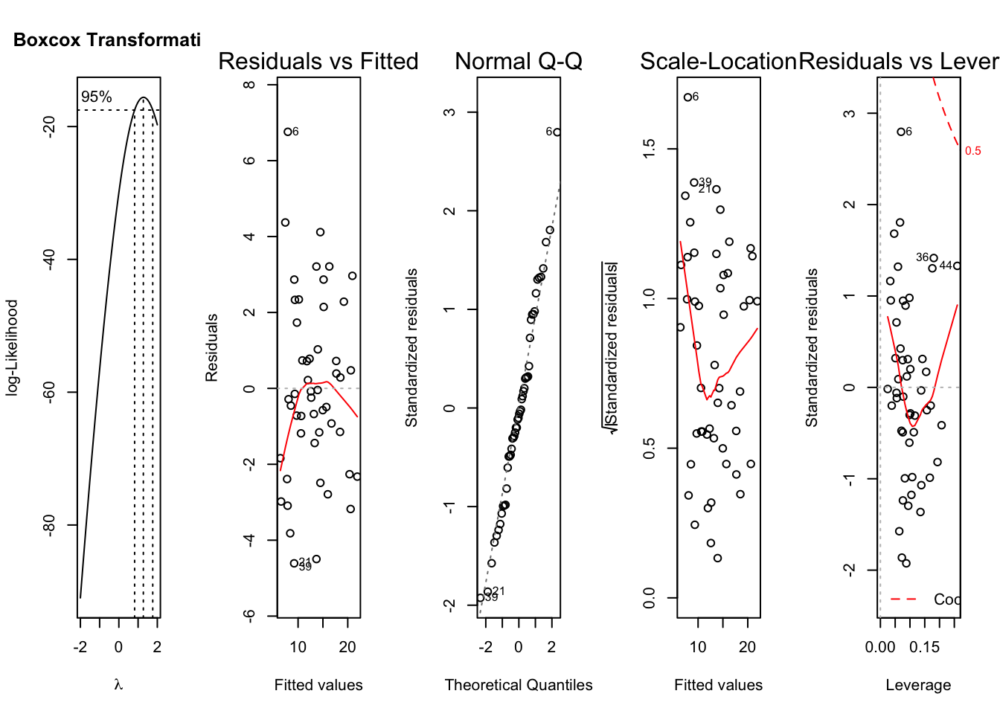
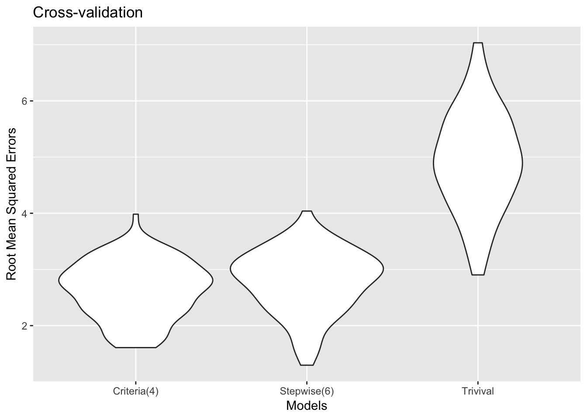

Crude Death Rate Prediction Using Economic, Legal and Health-Related Predictors
Method
Data from several sources were joined together into a merged dataset. We use 2016 year to build the model. Main outcome is crude death rate for each state, candidate predictors are law strength, unemployment rate, sleep time, smoking, self-reported health, overweight, population, poverty, mental health, leisure physical activity, drinking, disability and diabetes for each state. Two models were generated using criteria-based model selection and stepwise regression. Models were compared by BIC, adjusted R square, Cp, etc. Models were examined by distribution of residuals (QQ plot, residuals vs fitted value), outliers. We also used cross-validation to compare the two models.
Result
Correlation Matrix
Comments:
Strong correlations can be seen among several pairs of variables. To minimize multi-collinearity, model should be selected carefully.
Most of the variates follow approximately normal distributions.
“Best” model for a given number of variables
| 1 | 2 | 3 | 4 | 5 | 6 | 7 | 8 | |
|---|---|---|---|---|---|---|---|---|
| diabetes | * | |||||||
| disability | * | * | * | * | * | * | ||
| drinking | * | * | * | |||||
| law_strength_2016_only | * | * | * | * | * | * | * | |
| leisure_physical_activities | * | * | * | * | ||||
| mental_health | ||||||||
| overweight | ||||||||
| population | ||||||||
| poverty | ||||||||
| self_reported_health | * | * | * | |||||
| sleep | ||||||||
| smoking | * | * | * | * | * | * | ||
| unemployment_rate | * | * | * | * | * | * |
Comments:
It seems that “Law Strength”, “Smoking”, “Disability”, and “Unemployment Rate” are all strong predictors. “Leisure & Physical Activities” appears in larger models.
R-squared, BIC, Cp, Regression Sum of Squares, Residual Sum of Squares

Comments:
The model with four predictors seems to have the highest adjusted R-squared value, lowest BIC and Cp values, and has a high regression mean sum of squares and low residual mean sum of squares. The six-predictor model has similar model statistics as the four-predictor model, with the exception of the higher BIC value.
Two selected models of interest
Model from stepwise selection:
| term | estimate | std.error | statistic | p.value |
|---|---|---|---|---|
| (Intercept) | 10.4708267 | 4.6327477 | 2.260176 | 0.0289302 |
| drinking | -0.6333038 | 0.3807451 | -1.663327 | 0.1035197 |
| law_strength_2016_only | -0.1759851 | 0.0299607 | -5.873866 | 0.0000006 |
| leisure_physical_activities | -0.3321040 | 0.1482859 | -2.239619 | 0.0303397 |
| self_reported_health | 0.3079383 | 0.2168874 | 1.419807 | 0.1628735 |
| smoking | 0.4285323 | 0.1605796 | 2.668659 | 0.0106983 |
| unemployment_rate | 1.3501531 | 0.4602038 | 2.933815 | 0.0053517 |
| r.squared | adj.r.squared | sigma | statistic | p.value | df | |
|---|---|---|---|---|---|---|
| value | 0.7730692 | 0.7414044 | 2.475718 | 24.41418 | 0 | 7 |
Comments:
Drinking, law strength, and leisure all seem to be negatively associated with firearm crude death rate. Self-rated health, smoking, and unemployment rate are all positively associated with the firearm crude death rate.
Criteria based model:
| term | estimate | std.error | statistic | p.value |
|---|---|---|---|---|
| (Intercept) | -3.8337969 | 5.0898242 | -0.7532278 | 0.4552359 |
| disability | 0.3050451 | 0.1719631 | 1.7738989 | 0.0828465 |
| law_strength_2016_only | -0.1683490 | 0.0320384 | -5.2545962 | 0.0000039 |
| smoking | 0.2598411 | 0.1371695 | 1.8943066 | 0.0646220 |
| unemployment_rate | 1.2927511 | 0.4552585 | 2.8395980 | 0.0067578 |
| r.squared | adj.r.squared | sigma | statistic | p.value | df | |
|---|---|---|---|---|---|---|
| value | 0.7565902 | 0.7349538 | 2.506406 | 34.96835 | 0 | 5 |
Comments:
Disability, smoking, and unemployment rate are all positively associated with the firearm crude death rate. Law strength is negatively associated with the firearm crude death rate.
Model diagnostics
## [1] "Criteria-based model (4 predictors)"
## [1] "Stepwise model (6 predictors)"Comments: For both models, no severe outliers were observed. Residuals seem to follow a normal distribution. Box-Cox transformation show that no transformation of crude death rate is necessary in either model. Residuals don’t hold constant over fitted values, but are still clustered around zero and not severely biased.
Cross validation

Comments:
Our four-predictor model seems to have a slightly lower root-mean-squared error (RMSE) value than the six-predictor model. They are both better than the trivial model of y ~ 1. For parsimony, we would ultimately choose the four-predictor model.
Conclusion
Four-predictor model (disability, smoking, unemployment rate, law strength) seems to perform a little better than six-predictor model (drinking, law strength, leisure, self-rated health, smoking and unemployment rate). Model diagnosis shows that the residuals of both models agree with the underlying assumption. Cross validation shows a little higher rmse for six-predictor model than four-predictor model. Disability, smoking, unemployment rate positively associate with the firearm crude death rate. Law strength negatively associate with crude death rate.